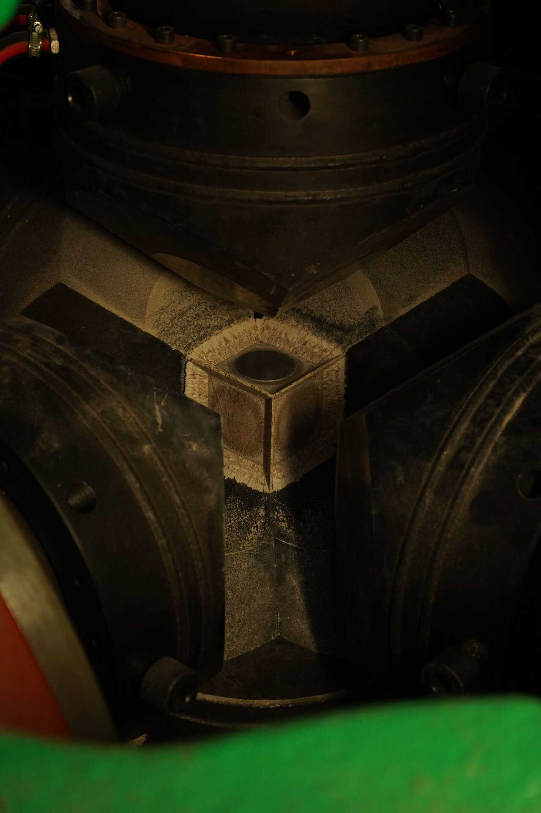
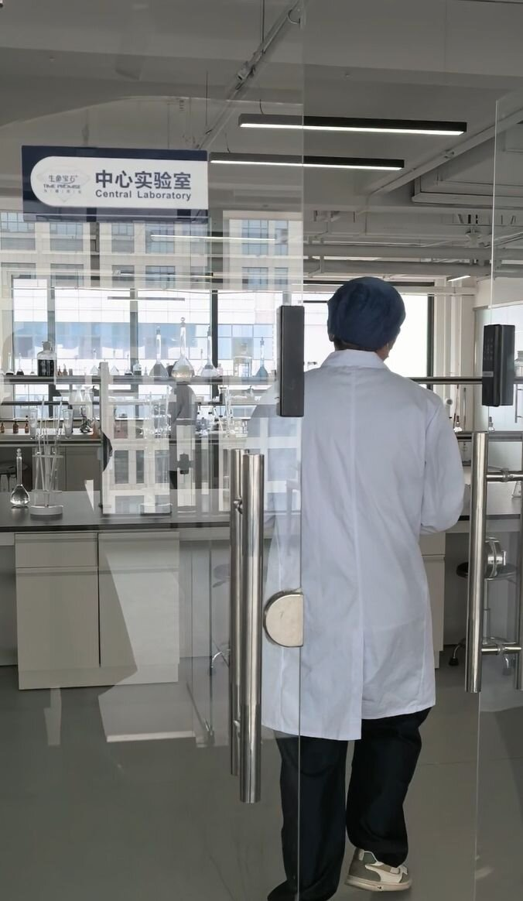

Metal Catalyst Solvents in HPHT: Ni-Mn-Co Alloy Performance
By Li Lihua, Chief Scientist
BioGem Lab Laboratory

High-pressure high-temperature (HPHT) diamond synthesis depends fundamentally on the catalyst solvent system. The Ni-Mn-Co ternary alloy is the dominant catalyst choice in industrial memorial diamond production, selected for its precise balance of carbon solubility, melting point depression, and diamond nucleation kinetics. This article examines the metallurgical behavior of the Ni-Mn-Co system under HPHT conditions, the relationship between alloy composition and growth parameters, and the operational protocols that govern catalyst performance in memorial diamond manufacturing.
The Role of Metal Catalysts in HPHT Diamond Synthesis
In the HPHT process, diamond growth occurs via the dissolution-precipitation mechanism. Carbon from the graphite source dissolves into a molten metal catalyst at high temperature (typically 1,300–1,500°C) and high pressure (5–6 GPa). As the carbon-saturated alloy is subjected to a temperature gradient across the growth cell, carbon precipitates onto the diamond seed crystal, extending the lattice in the thermodynamically stable diamond phase.
The catalyst serves three critical functions: (1) it provides a liquid medium in which carbon exhibits appreciable solubility, (2) it lowers the activation energy for the graphite-to-diamond phase transition, and (3) it facilitates carbon transport from the source to the seed crystal. Without an effective catalyst, the direct conversion of graphite to diamond requires pressures exceeding 12 GPa and temperatures above 2,700°C—conditions far beyond the operational envelope of conventional industrial HPHT equipment.
The transition metals of Group VIII—iron, nickel, and cobalt—form the basis of virtually all HPHT catalyst systems. Nickel, in particular, has been the cornerstone of industrial diamond synthesis since the 1950s due to its high carbon solubility (approximately 2.5 wt% at 1,400°C under 5.5 GPa) and its ability to stabilize the liquid phase at relatively modest temperatures. However, binary Ni-based systems exhibit limitations in nucleation control, color stability, and growth rate consistency. The introduction of manganese and cobalt as tertiary alloying elements addresses these limitations through synergistic metallurgical effects.
Ni-Mn-Co Ternary Alloy: Composition and Phase Behavior
Industrial Ni-Mn-Co catalysts for memorial diamond synthesis typically operate within a composition range of 65–75 wt% nickel, 15–25 wt% manganese, and 5–15 wt% cobalt. This ratio has been empirically optimized over decades of industrial production, balancing the competing requirements of carbon transport efficiency, diamond quality, and process stability.
Nickel serves as the primary solvent matrix. Its face-centered cubic (FCC) lattice structure provides a favorable environment for carbon dissolution, and its liquidus temperature of approximately 1,455°C (at atmospheric pressure) is depressed to roughly 1,320°C under 5.5 GPa. Under HPHT conditions, the Ni-C eutectic forms at approximately 1,310°C, creating the liquid phase necessary for carbon transport. Nickel also exhibits strong catalytic activity for the sp² to sp³ bond rearrangement, effectively accelerating the graphite-to-diamond conversion.
Manganese functions as a secondary solvent and, critically, as a nitrogen getter. In biological carbon sources—human hair, pet fur, plant material—nitrogen is present at concentrations of 2–6 wt% in the form of keratin and amino acids. Without active nitrogen removal, this nitrogen dissolves into the catalyst and incorporates into the growing diamond lattice, producing intense yellow coloration. Manganese forms stable nitrides (Mn₃N₂, Mn₄N) at HPHT temperatures, sequestering nitrogen and preventing its incorporation into the diamond structure. A catalyst containing 20 wt% manganese reduces nitrogen incorporation by approximately 60–70% compared to pure nickel systems, yielding near-colorless diamonds (E–H color grades) from biological carbon sources.
Cobalt modifies the electronic structure of the catalyst and influences the growth interface. At concentrations of 5–10 wt%, cobalt increases the activity coefficient of carbon in the liquid alloy, effectively raising the carbon supersaturation level at the growth interface. This elevated supersaturation drives faster diamond growth rates—typically 3–5 mg per hour for memorial diamonds of 0.3–1.0 carat final weight. However, cobalt concentrations above 12 wt% introduce excessive growth rate variability, leading to asymmetric crystal development and increased internal stress. Cobalt also acts as a secondary color modifier, suppressing certain optical absorption bands associated with nitrogen-vacancy centers.
Carbon Solubility and Supersaturation Dynamics
The solubility of carbon in the Ni-Mn-Co liquid alloy is governed by temperature, pressure, and alloy composition. At 5.5 GPa and 1,350°C, the ternary system dissolves approximately 2.8–3.2 wt% carbon. This is substantially higher than the solubility in pure nickel (2.1 wt% at the same conditions), due to the synergistic effects of manganese and cobalt on the activity coefficient of dissolved carbon.
Supersaturation—the thermodynamic driving force for diamond growth—is controlled by the temperature gradient across the growth cell. Typical industrial HPHT systems maintain a temperature differential of 30–50°C between the carbon source region (hotter, 1,380–1,420°C) and the seed crystal region (cooler, 1,340–1,380°C). The carbon concentration gradient in the liquid alloy follows Fick's law of diffusion, with flux rates proportional to the temperature gradient and the diffusion coefficient of carbon in the alloy.
At 1,350°C, the diffusion coefficient of carbon in Ni-Mn-Co liquid is approximately 2.1 × 10⁻⁹ m²/s. For a growth cell with a 5 mm diffusion path and a 40°C temperature gradient, the steady-state carbon flux is approximately 1.2 × 10⁻⁶ mol/cm²·s. This flux corresponds to a diamond growth rate of 3.5–4.5 mg/hour for a seed crystal of 3.5 mm diameter, which is the standard target for memorial diamond synthesis of 0.3–0.5 carat stones. Larger stones (1.0–2.0 carat) require proportionally longer growth times of 120–200 hours, with growth rates declining toward the end of the cycle as the seed crystal surface area increases and the local carbon concentration gradient diminishes.
Excessive supersaturation—caused by temperature gradients above 60°C or carbon source concentrations exceeding 4.0 wt%—leads to spontaneous nucleation within the catalyst body. These secondary nuclei compete with the seed crystal for available carbon, producing polycrystalline overgrowths, internal inclusions, and surface defects. Quality control protocols require real-time monitoring of the temperature gradient using embedded thermocouples, with automatic process termination if the gradient exceeds the 50°C threshold.
Growth Kinetics and Crystal Quality Correlation
The relationship between catalyst composition and diamond crystal quality follows well-defined metallurgical principles. The growth habit of HPHT-synthesized diamonds is predominantly cubic (100) and octahedral (111), with the relative development of these faces controlled by the supersaturation level and the presence of impurity elements in the catalyst.
At standard supersaturation (temperature gradient 40°C, carbon flux 1.0 × 10⁻⁶ mol/cm²·s), the Ni-Mn-Co system produces diamonds with a cubic-to-octahedral face ratio of approximately 3:2. This morphology is optimal for the round brilliant cut commonly specified in memorial diamond orders. The (100) faces grow approximately 15% faster than (111) faces under these conditions, producing a slightly truncated octahedral crystal that yields high recovery rates during cutting—typically 55–65% of the raw crystal weight is retained in the final polished stone.
Catalyst contamination is the primary source of crystal defects in memorial diamonds. Biological carbon sources introduce trace elements including sulfur, phosphorus, calcium, potassium, and magnesium. Sulfur, in particular, reacts with nickel at HPHT temperatures to form nickel sulfide (Ni₃S₂), which precipitates as solid inclusions within the growing diamond. These sulfide inclusions appear as dark spots under 10× magnification and degrade clarity grades from VS to SI or lower. The sulfur tolerance of the Ni-Mn-Co system is approximately 200 ppm; feedstocks with higher sulfur content require preliminary thermal desulfurization at 400–500°C in a hydrogen atmosphere.
Phosphorus contamination introduces a different defect mechanism. Phosphorus atoms substitute for carbon in the diamond lattice, creating n-type doping centers that produce yellow-green fluorescence under long-wave ultraviolet light. While this fluorescence is not visible under normal lighting, it can affect the gemological grading of the finished stone. Catalysts with elevated cobalt content (10–15 wt%) exhibit a 30–40% reduction in phosphorus incorporation compared to low-cobalt formulations, providing an additional quality control mechanism for high-phosphorus feedstocks such as plant-based carbon sources.
Catalyst Degradation and Lifecycle Management

Technician monitoring HPHT oven operation during catalyst lifecycle management.
The Ni-Mn-Co catalyst is not consumed during the synthesis cycle but undergoes progressive degradation through three mechanisms: oxidation, contamination accumulation, and structural embrittlement. Understanding these degradation pathways is essential for maintaining consistent growth performance across multi-cycle production campaigns.
Oxidation occurs during the initial heating phase of each synthesis cycle if residual oxygen is present in the growth chamber. Even at concentrations below 100 ppm, oxygen reacts with molten nickel to form nickel oxide (NiO) at the catalyst surface. This oxide layer reduces carbon solubility locally and creates a diffusion barrier that suppresses growth rates by 10–20%. Pre-synthesis chamber evacuation to pressures below 10⁻³ Pa, followed by argon backfill, effectively eliminates this degradation pathway.
Contamination accumulation is the dominant degradation mechanism in biological-source memorial diamond production. Each synthesis cycle introduces trace impurities from the carbon feedstock into the catalyst matrix. After 40–50 cycles, the accumulated impurity concentration reaches levels that measurably alter the carbon solubility and nucleation behavior. The catalyst's liquidus temperature shifts by 15–25°C, the carbon solubility decreases by 8–12%, and the incidence of spontaneous nucleation increases by a factor of three. Quality control protocols require catalyst replacement or regeneration after 50 cycles for human hair feedstocks and 60 cycles for pet fur, reflecting the lower impurity load of keratin-based animal proteins compared to the sulfur-rich cysteine content of human hair.
Structural embrittlement results from repeated thermal cycling between ambient temperature and 1,350°C. The Ni-Mn-Co alloy undergoes phase transformations during heating and cooling, with the FCC austenite phase transforming to a body-centered cubic (BCC) structure below 400°C. Repeated cycling through this transformation causes grain boundary decohesion and microcracking, reducing the mechanical integrity of the catalyst body. After 60–80 cycles, the catalyst becomes sufficiently brittle that it fractures during the high-pressure compression phase, creating particulate contamination that embeds in the growing diamond. The practical catalyst lifespan is therefore limited to 50–60 cycles, even in the absence of chemical contamination.
Catalyst recovery and regeneration involves acid dissolution of the spent alloy, chemical precipitation of impurities, and re-alloying with fresh metal feedstock. The recovery process achieves 85–92% metal reclamation efficiency. The regenerated catalyst is spectroscopically analyzed to confirm the Ni:Mn:Co ratio and total impurity content before reintroduction to the production line. Catalysts with total impurity content exceeding 500 ppm are diverted to metal recycling rather than regeneration, as the cost of purification exceeds the value of the recovered metal.
Operational Parameters for Memorial Diamond Production
The practical application of the Ni-Mn-Co catalyst system in memorial diamond production requires precise control of synthesis parameters, tailored to the carbon source type and the target diamond specifications. The following table summarizes standard operating parameters for different production scenarios:
| Parameter | Human Hair | Pet Fur | Plant Material |
|---|---|---|---|
| Catalyst composition | 70% Ni, 20% Mn, 10% Co | 72% Ni, 18% Mn, 10% Co | 68% Ni, 22% Mn, 10% Co |
| Peak temperature | 1,350°C | 1,360°C | 1,340°C |
| Pressure | 5.5 GPa | 5.5 GPa | 5.6 GPa |
| Temperature gradient | 40°C | 42°C | 38°C |
| Growth duration | 80–120 hours | 70–100 hours | 90–140 hours |
| Expected color grade | E–H | E–H | E–H |
| Clarity target | VS1–VS2 | VS2–SI1 | VVS2–VS1 |
These parameters are optimized for the 6×1,200-ton cubic press system described in the BioGem Lab technology documentation. Different press geometries (belt, split-sphere) require recalibration of the temperature gradient and pressure setpoints, as the heat transfer characteristics and pressure distribution vary significantly with anvil design. Partners operating non-cubic press equipment should consult the manufacturing specifications for press-specific parameter tables.
Color Control Through Catalyst Chemistry
Memorial diamond color is a primary quality parameter for end clients, and the Ni-Mn-Co catalyst system provides substantial control over color formation through three chemical mechanisms: nitrogen gettering, boron incorporation, and vacancy center management.
Nitrogen is the most abundant impurity in biological carbon sources and the dominant color-causing element in HPHT diamonds. In the diamond lattice, nitrogen atoms substitute for carbon atoms, creating single-substitutional nitrogen centers (C centers) that produce intense yellow absorption. The optical absorption coefficient at 415 nm (the N3 center wavelength) increases by approximately 0.15 cm⁻¹ per ppm of nitrogen incorporated. For a typical 0.5 carat memorial diamond with a 5.2 mm diameter, this corresponds to a visible yellow tint at nitrogen concentrations above 20 ppm.
Manganese in the catalyst acts as a nitrogen getter by forming thermodynamically stable manganese nitrides. At 1,350°C and 5.5 GPa, the equilibrium constant for Mn₃N₂ formation is approximately 2.3 × 10⁴, indicating strong nitrogen affinity. A catalyst containing 20 wt% manganese can sequester nitrogen at concentrations up to 500 ppm in the carbon feedstock, effectively preventing nitrogen incorporation into the diamond lattice. This gettering capacity is the primary reason that memorial diamonds from biological sources achieve near-colorless grades rather than the intense yellow typical of uncatalyzed or low-manganese HPHT synthesis.
Boron incorporation produces blue coloration in diamonds, which is undesirable for standard memorial applications. BioGem Lab does not offer fancy color diamonds. Boron is present in some plant-based carbon sources at concentrations of 5–15 ppm. The Ni-Mn-Co catalyst does not actively getter boron, but cobalt modifies the electronic structure of the growth interface in a way that suppresses boron incorporation by approximately 25% compared to pure nickel catalysts. This suppression is attributed to the formation of a Co-B surface complex at the growth interface, which blocks boron adsorption onto the diamond lattice.
Vacancy centers—specifically the nitrogen-vacancy (NV) center—are responsible for the pink-to-red fluorescence observed in some memorial diamonds under UV excitation. These centers form when nitrogen atoms and lattice vacancies associate during the cooling phase of synthesis. The NV⁰ center emits at 575 nm (red), while the NV⁻ center emits at 637 nm (deep red). The concentration of NV centers is controlled by the cooling rate: rapid cooling (>50°C/minute) traps vacancies and nitrogen in close proximity, enhancing NV formation; slow cooling (<20°C/minute) permits vacancy diffusion and annihilation, reducing NV concentration. Standard memorial diamond protocols specify a controlled cooling rate of 25–30°C/minute, which produces minimal NV fluorescence while avoiding thermal shock cracking.
Quality Control and Process Validation
Industrial memorial diamond production requires rigorous quality control of the catalyst system to ensure batch-to-batch consistency. The following analytical protocols are standard practice at facilities operating Ni-Mn-Co catalysts:
Catalyst composition verification. Fresh and regenerated catalysts are analyzed by inductively coupled plasma optical emission spectroscopy (ICP-OES) to confirm the Ni:Mn:Co ratio within ±0.5 wt% tolerance. Deviations outside this range trigger catalyst reformulation or rejection.
Impurity profiling. Total impurity content (sulfur, phosphorus, calcium, iron, copper, zinc) is quantified by ICP-OES. The pass threshold is 300 ppm total impurities for fresh catalyst and 500 ppm for regenerated catalyst. Catalysts exceeding these limits are diverted to external metal recycling.
Growth rate validation. Each synthesis batch includes a test coupon—a 2 mm diamond seed crystal grown for 24 hours under standard parameters. The test coupon weight gain is measured to ±0.1 mg precision. Growth rates below 2.5 mg/hour indicate catalyst degradation, triggering catalyst replacement before the next production cycle.
Color validation. The test coupon is evaluated by UV-Vis spectroscopy to measure the absorption coefficient at 415 nm (N3 center). Absorption coefficients above 0.8 cm⁻¹ indicate excessive nitrogen incorporation, requiring either catalyst reformulation or feedstock pre-treatment to reduce nitrogen content.
Structural inspection. The test coupon is examined by Raman spectroscopy for the diamond peak at 1,332 cm⁻¹. Full width at half maximum (FWHM) values above 4.5 cm⁻¹ indicate lattice stress, typically caused by excessive growth rate or catalyst contamination. FWHM values below 2.5 cm⁻¹ confirm high crystalline quality.
For B2B partners operating licensed memorial diamond production lines, BioGem Lab provides catalyst formulation specifications, quality control protocols, and analytical calibration standards as part of the technology transfer package. Partners may also submit catalyst samples for third-party compositional analysis at the laboratory facility.
Partner with a Laboratory-Driven Manufacturer
BioGem Lab operates a dedicated HPHT memorial diamond synthesis facility with full catalyst formulation and quality control capabilities. We supply white-label and OEM memorial diamonds to funeral homes, pet cremation services, and memorial retailers worldwide.
Explore ContactFrequently Asked Questions
Why is the Ni-Mn-Co alloy preferred over other catalyst systems in HPHT diamond synthesis?
The Ni-Mn-Co ternary system offers the optimal balance of carbon solubility, melting point depression, and diamond nucleation kinetics. At 5.5 GPa and 1,350°C, the alloy maintains liquid phase stability while achieving carbon saturation levels of 2.8–3.2 wt%, sufficient for sustained diamond growth at rates of 3–5 mg/hour. Binary systems such as Fe-Ni or Ni-Cr require higher temperatures or exhibit incomplete carbon transport, reducing growth efficiency.
How does catalyst composition affect memorial diamond color formation?
Manganese content in the Ni-Mn-Co alloy directly influences nitrogen gettering during synthesis. Elevated Mn concentrations (above 5 wt%) reduce nitrogen incorporation from the growth atmosphere, yielding near-colorless grades (E–H). Conversely, reduced Mn content permits higher nitrogen solubility, producing color outside our standard range. Cobalt acts as a secondary color modifier by altering the Fermi level within the diamond lattice, suppressing certain optical absorption bands.
What is the typical catalyst recovery rate after HPHT synthesis?
Industrial HPHT operations achieve catalyst recovery rates of 85–92% per synthesis cycle. The residual alloy is chemically dissolved in aqua regia or separated by acid leaching, then re-alloyed with fresh metal feedstock to maintain the target Ni:Mn:Co ratio. Impurities introduced by biological carbon sources (sulfur, phosphorus, calcium) gradually deplete catalyst activity, necessitating a 15–20% fresh catalyst replacement after every 50–60 cycles.
Can catalyst composition be adjusted for specific diamond colors?
Color modifications are theoretically possible through catalyst adjustments, but BioGem Lab does not offer fancy color diamonds. Our standard production yields E–H near-colorless only.
How does catalyst degradation affect memorial diamond clarity?
As the catalyst accumulates impurities over multiple synthesis cycles, the incidence of solid inclusions increases. Sulfur-derived nickel sulfide inclusions appear as dark spots under magnification, degrading clarity from VS to SI grades. Phosphorus contamination creates lattice defects that fluoresce under UV light. Catalyst replacement at 50-cycle intervals maintains consistent VS1–VS2 clarity for human hair feedstocks and VVS2–VS1 clarity for plant-based feedstocks.
Conclusion
The Ni-Mn-Co ternary alloy catalyst is the central enabling technology of industrial HPHT memorial diamond production. Its composition—typically 65–75% nickel, 15–25% manganese, and 5–15% cobalt—has been empirically optimized to balance carbon solubility, nitrogen gettering, and growth rate control. The manganese component's ability to sequester nitrogen from biological carbon sources is particularly critical, enabling the production of near-colorless diamonds from feedstocks that would otherwise yield intensely yellow stones.
Understanding the metallurgical behavior of this catalyst system under HPHT conditions allows manufacturers to predict and control diamond quality parameters including color, clarity, growth rate, and crystal morphology. The operational parameters—temperature, pressure, gradient, and catalyst composition—must be tailored to the specific carbon source and the target diamond specifications. Rigorous quality control, including catalyst composition verification, growth rate validation, and spectroscopic analysis, ensures batch-to-batch consistency that meets the demanding standards of the memorial diamond market.
For B2B partners and OEM clients, the catalyst system represents a core component of the technology transfer package. BioGem Lab provides detailed formulation specifications, analytical protocols, and production parameter tables as part of the partnership agreement. Technical inquiries regarding catalyst chemistry, synthesis optimization, or quality control implementation can be directed through the contact channel.
Patent reference: CNIPA ZL 201010565778.9. Carbon extraction and diamond synthesis methodology. The catalyst compositions and process parameters described in this article are derived from industrial practice and publicly available metallurgical literature on HPHT diamond synthesis.
Ready to Add Memorial Diamonds to Your Portfolio?
BioGem Lab supplies certified memorial diamonds to funeral homes, pet cremation services, and memorial retailers on a white-label and OEM basis. Full technology support, catalyst specifications, and quality documentation included.
Contact Our TeamRelated Articles
What Is HPHT Diamond Growth?
Fundamentals of HPHT synthesis: pressure, temperature, catalyst transport, and crystal growth mechanisms.
Crystal Lattice Stability
How diamond structure maintains stability at 5.5 GPa and the science of reconstructive phase transformations.
HPHT Parameter Optimization
Optimal temperature and pressure parameters for memorial diamond synthesis: 5.5 GPa at 1,450°C.
Li Lihua — Chief Scientist
Patent inventor ZL 201010565778.9. View profile →
Ready to Partner with BioGem Lab?
Learn about our white-label and OEM manufacturing programs for memorial diamond businesses.
Explore Partnership →Li Lihua — Chief Scientist
Patent inventor ZL 201010565778.9. View profile →